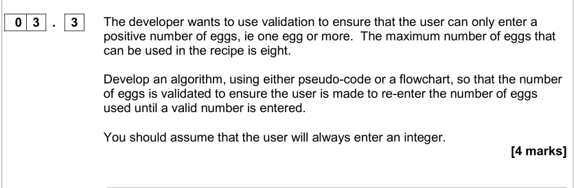

Code Structures
By Jeetaditya Chatterjee
The basic building blocks
Press s for speaker notes
Basic overview of pseudocode
name <- input "what is your name?" hello <- "Hi " print hello + name
talk about notation
Variables
x = 10 print(x) x = 20 print(x)
10 20
Input and output
Input
to take input from the user you use the input function
x = input("some prompt: ")
Output
we use the print function to output
print("some cool string")
Selection and Iteration
If statements
something = "a string" if something == "a string" then "something is a string" elsif something == "a number" then "something is a number" else "something is not a string" end
something is a string
something = false if something == true "soemthing is true" elsif something == nil "soemthing is nil" else "something is false" end
something is false
Switch statements
something = 3 switch something: case 1: "something = 1" case 2: "something = 2" case 3: "something = 3" end switch
something = 3
Conditional loops
condition = true; count = 0; while condition != true { // this loop will never run if (count != 10) { count += 1; } else condition = true; } print("count =", count)
count = 0
do { if (count != 10) { count += 1; } else condition = true; } while condition != true; print("count =", count)
count = 1
count = 0 while count != 0: count += 1 # count = count + 1 while True: count += 1 if count != 0: break
for loops
lst = [1, 2, 3] for i in range(3): print(lst[i]) for i in lst: print(i)
1 2 3
1 2 3
A side note on the difference between expressions and statements
import math x = 1 + 1 y = 2 > 1 z = math.sqrt(4) return [x, y, z]
| 2 | True | 2.0 |
procedures and functions
def in_array(array, to_find): for i in array: if i == to_find: return True return False lst = [1,2,3] x = in_array(lst, 3) y = in_array(lst, 4) [x, y]
| true | false |
Other misc stuff
Casting
# its just a function x = str(7) y = int("7")
String handling
string = "string" string.length startPos = 1 numberOfChars = 3 string.subString(startPos, numberOfChars)
| 6 | “tri” |
types of questions
Write an implementation of the linear search algorithm using psuedocode
Questions
Tell me the code structures
What loop should you use when you need to loop through an array?
What structure decides which path to take depending on a boolean expression?
What structure should you use when you need to check a variable against multiple expressions
Question 1

Question 2

Question 3

Question 4
